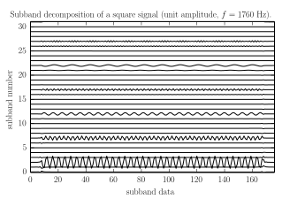
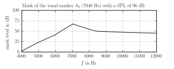
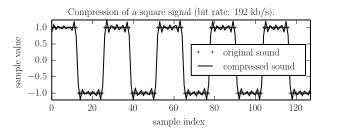

This work is licensed under a Creative Commons Attribution 3.0 Unported License (CC BY 3.0). You are free to share -- to copy, distribute and transmit the work -- and to remix -- to adapt the work -- under the condition that the work is properly attributed to its author.
Preamble
This lab session is dedicated to the implementation of a perceptual audio coder using filter banks, psychoacoustic models and vector quantization of subband data. For the sake of simplicity, we will only consider stationary sounds so that we may compute the psychoacoustic mask of the sound only once.
In the sequel, the sampling frequency \(\Delta f\) is \(44.1\) kHz, spectral analysis is performed on frames of \(512\) samples and vector quantization is applied on frames of 12 samples in each of the 32 subbands of the filter bank.
You may skip the questions identified with a \(\star\) symbol in a first pass.
Filter Banks
In the sequel, we assume that all symbols of audio.filters have been imported.
Analysis Filter Bank. The code
>>> A, dt = MPEG.A, MPEG.dt >>> analyze = Analyzer(A, dt=dt)creates an instance of an analysis filter bank based on of the pseudo-quadrature mirror filters (PQMF) of the MPEG standard. This polyphase implementation consumes frames of 32 consecutive samples and outputs an arrays of 32 values, one for each subband.
>>> assert shape(frame) == (32,) >>> subband_data = analyze(frame)Use this filter bank to implement
display_subbands, a function that displays graphically the subband decomposition of signals of audio data of arbitrary length. Test this function with the data:data = square(f=1760.0, N=10000)where the square signal is implemented with:
def square(f, N=512, df=44100): n = int(round_(0.5 * (df / f))) frame = n * [1.0] + n * [-1.0] frames = (N // len(frame) + 1) * frame return array(frames)[:N]
Synthesis Filter Bank. Symmetrically, a PQMF synthesis filter bank may be instantiated with:
>>> S, dt, M = MPEG.S, MPEG.dt, MPEG.M >>> synthesize = Synthesizer(S, dt=dt, gain=M)The application of this instance to subband data generates an audio frame:
>>> frame = synthesize(subband_data)Implement a function
reconstructthat takes a 1d array of samples for argument and returns a 1d array that has been analyzed and synthesized.\(\star\) Use a test function -- such as an impulse -- to determine how much delay the whole analysis and synthesis process induces. Modify
reconstructto compensate for that delay.\(\star\) Is the reconstruction perfect ? Determine experimentally the order of magnitude of the signal-to-noise of the reconstruction process (irrespective of the induced delay). Is it good enough ?
Psychoacoustics Mask
Let \(P\) be the (normalized) sound power of the frame \(x\): \[ P = \left< x^2(t)\right> = \frac{1}{512} \sum_{n=0}^{511} x(n\Delta t)^2 = \frac{\Delta f}{512} \left[\Delta t \sum_{n=0}^{511} x(n\Delta t)^2 \right] \]
Power Spectrum. In the frequency domain, we have: \[ P = \frac{\Delta f}{512} \left[\int_{-\Delta f / 2}^{\Delta f/2} |x(f)|^2 \, df \right] = \frac{\Delta f}{512} \left[2 \int_{0}^{\Delta f/2} |x(f)|^2 \, df \right]. \]
Fast Fourier Transform. We discretize the frequency range \([0, \Delta f/ 2]\): \[ f_k= \frac{ k\Delta f}{512}, \; k=0, ..., 256 \; \mbox{ and } \; \hat{x}_k = \Delta f \times x(f=f_k). \] The \(\hat{x}_k\) are (approx. half of) the Discrete Fourier Transform coefficients of the sequence \(x(t=n\Delta t)\), \(n=0, ..., 511\).
Use the trapezoidal rule to compute an approximation of \(P\) that instead of the integral over frequencies above relies on a finite sum that uses the \(\hat{x}_k\). What is the contribution \(P_k\) of the frequency \(f_k\) to this sum ?
Use the Fast Fourier Transform to implement a function
P_k_from_framewhose argument is a frame of 512 sample values and that computes the array of values \(P_k\).\(\star\) Use a random frame to compute the sum of the \(P_k\) ; compare it to \(P\). Can you explain why the values are so close ?
Scaling. The power \(P\) is normalized: it belongs to \([0,1]\) if \(x(t) \in [-1,+1]\). Modify the code of
P_k_from_frame: scale the returned array so that the sum of its values is in the \([0,10^{9.6}]\) range instead.Introduce an optional boolean argument
dBtoP_kthat allows to return the intensities as sound pressure levels (dBshall default toFalse: intensities are then computed as usual).Power Spectrum. Display the power spectrum -- the power \(P_k\) as a function of the frequency \(f_k\) -- of the pure tone with unit amplitude A8 (frequency: 7040 Hz) in a linear scale, then in a dB scale.
Windows. Extend the function
P_k_from_framewith an optionalwindowargument, that will be applied to the arrayframebefore the spectral analysis. As this process will likely alter the signal power, the arrayframeshould also be scaled to attempt to restore the initial intensity level.\(\star\) Create a frame made of a pure tone with frequency 7040 Hz (\(\mbox{A}_8\)) and another one with frequency 14080 Hz (\(\mbox{A}_9\)) whose amplitude is one thousandth (1/1000) of the first. Display the power spectrum of this frame in a dB scale with and without a hanning window. What is the purpose of the window in this context ?
Tonal/Non-Tonal Classification. The component \(k \in \{3,...,249\}\) of the array \(P_k\) is considered tonal if \(P_k\) is greater than or equal to \(P_{k-1}\) and \(P_{k+1}\) and \(P_k \geq P_{k+j} + 7.0 \mbox{ dB}\) for every \(j \in J_k\).
\(k\) \(J_k\) \(003 \leq k < 063\) \(\{-2,+2\}\) \(063 \leq k < 127\) \(\{-3,-2,+2, +3\}\) \(127 \leq k < 250\) \(\{-6, -5, -4, -3, -2, +2, +3, +4, +5, +6\}\) Implement a function
maskersthat given a frame of length 512 returns:(k_t, P_t): the index and power arrays of tonal components,(k_nt, P_nt): the index and power arrays of non-tonal components.
- Masking Patterns. We assume that a single masker with frequency \(b_m\) bark and sound pressure level \(I_m\) (in dB) generates at the frequency \(b\) bark a mask level of
\begin{equation}
\mbox{mask level [dB]} = m(b) + a(b)
\; \mbox{ with } \;
\Delta b = b - b_m
\end{equation}
where the base mask level \(m(b)\) is defined as \[ m(b) = \left| \begin{array}{lrcll} &(+ 11.0 - 0.40 \times I_m) &\times& (\Delta b + 1.0) & \mbox{if } \; \Delta b < -1.0\\ +&(+ 6.0 + 0.40 \times I_m) &\times& (\Delta b + 0.0) & \mbox{if } \; \Delta b < 0.0 \\ +&(- 17.0 ) &\times& (\Delta b + 0.0 ) & \mbox{if } \; 0.0 \leq \Delta b\\ +&( 0.15 \times I_m) &\times& (\Delta b - 1.0) & \mbox{if } \; 1.0 \leq \Delta b\\ \end{array} \right. \] and the attenuation \(a(b)\) is given by \[ a(b) = \left| \begin{array}{cl} -1.525 - 0.275 \times b - 4.5 & \mbox{if the masker is tonal,} \\ -1.525 - 0.175 \times b - 0.5 & \mbox{otherwise.} \end{array} \right. \]

\(\star\) In this model, is the masking effect of tonal sounds stronger or weaker than the one of non-tonal sounds ? Is a loud voice with a high pitch more likely to to mask another loud voice with a low pitch or the opposite ?Implement a function
excitation_patternwhose arguments are:b: an array of frequencies in bark,b_m: the frequency of the masker in bark,I_m: the power of the masker in dB,tonal: a boolean,Truefor tonal maskers,Falseotherwise,
and that returns:
mask: an array of the mask levels at the frequenciesb.
Composite Masks and Sampling. Develop a code that given a frame, computes its power spectrum at every frequency \(f_k\), then the mask associated to every spectral component and creates a global mask array from the addition of the all mask powers and the absolute threshold of hearing1.
This implementation provides 257 mask levels, one for every \(f_k\). What we need is one mask level for every of the 32 subbands that split uniformly the frequency range \([0, \Delta f / 2]\). How should we select the subband mask level if we intend to be conservative ?
Implement this strategy in a function
mask_from_framewhose argument is a frame of 512 samples and that returns the 32 subband mask levels in dB.Tests. Apply the previous computations with frames of stationary signals such as square signals, and display graphically the results in a function
display_mask.
Subband Data Vector Quantization
Scale Factors. The quantization of subband data is based on 32 vector quantizers: each of these quantizers is applied not to a single sample values, but to frames of 12 consecutive values. All values of such frames are divided by a scale factor to be mapped into \([-1,+1]\) ; then, a uniform midtread quantizer on \([-1,+1]\) is applied.
The scale factor of a frame is determined -- among a finite list of candidate scale factors -- as the least value greater than all the absolute values in the frame, or the greatest candidate scale factor value if no scale factor that satisfies this condition exist.
Define an increasing array of 64 scale factors with the following pattern:
>>> scale_factors [..., 0.5, 0.62996, 0.79370, 1.0, 1.25992, 1.58740, 2.0]Bit Rate and Bit Pool Size. Consider a sequence of 32 frames of 12 values, one frame by subband. Assume that the uniform quantizer used in the subband \(i\) can use \(b_i\) bits for the quantization any scaled sample, with \(b_i \in \{0, 1, 2, ..., 15\}\).
Compute the total number of bits required to describe in every subband:
- the scale factor selected,
- the number \(b_i\) of bits allocated,
- the quantized values of the frame of 12 samples.
\(\star\) At what frequency are produced batches of \(32 \times 12\) sample values by the analysis filter bank ? What is the bit rate of the quantization, as a function of the total number of bits \(b = b_0 + b_1 + ... + b_{31}\) allocated for a frame of 12 (scaled) values ? We select a target bit rate of 192 kb/s (for a single-channel data) ; what is the value of the bit pool size \(b\) ?
Bit Allocation Algorithm. The bit allocation algorithm of the first psychoacoustics model of MPEG-1 is based on the comparison in each subband of the noise level due to the quantization and the mask level generated by the psychoacoustic analysis. The algorithm that we implement iteratively allocates bits to make the noise-to-mask ratio approximately equal in each subband.
Consider a single scale factor quantizer \([\, \cdot \,]\), applied to a frame of 12 values, that has computed the scale factor \(A\) and may use \(b\) bits by sample. Compute the quantization noise level \[ \mbox{noise level [dB]} = 10 \log_{10}\left<([x] - x)^2\right>. \] under the high resolution hypothesis.
Implement a function
allocate_bitswith argumentsframesandmask, whereframesis an array of shape(12, 32)andmaska sequence of 32 mask levels in dB, that returns the array[b_0, b_1, ..., b_31].The function shall implement the following algorithm:
while the bitpool is not empty:
compute the noise-to-mask ratio in dB for each subband
\[ \mbox{NMR [dB]} = \mbox{noise level [dB]} - \mbox{mask level [dB]} \]
find the subband with the worst (biggest) noise-to-mask ratio,
allocate one extra bit from the bit pool to this subband, starting at 0.
Integration -- Perceptual Compression
Implement a function demo that given a single-channel sound data will perform the compression and decompression by the methods of the previous section, display both signal and finally play both signals. Introduce an extra argument bit_pool that allows to compress with a bit rate different from the default.

Use this function to test the compression of stationary signals (pure tones, square signals, white noise) and study in each case how much the bit pool size can be decreased without too much quality loss.
Warning: the addition of powers should be performed in the original linear scale.↩